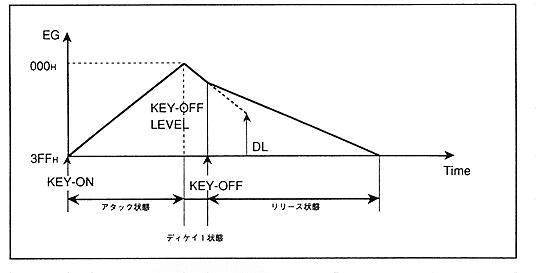

Figure 4.13 KEY-OFF during decay state transition

When entering the Decay 1 state, the value decays toward DL (Decay Level) according to the D1R (Decay 1 Rate) setting. If KEY_OFF is executed in the middle of this, it will be attenuated according to the set value of RR (release rate) from the level (KEY_OFF-LEVEL) at the time of KEY_OFF.